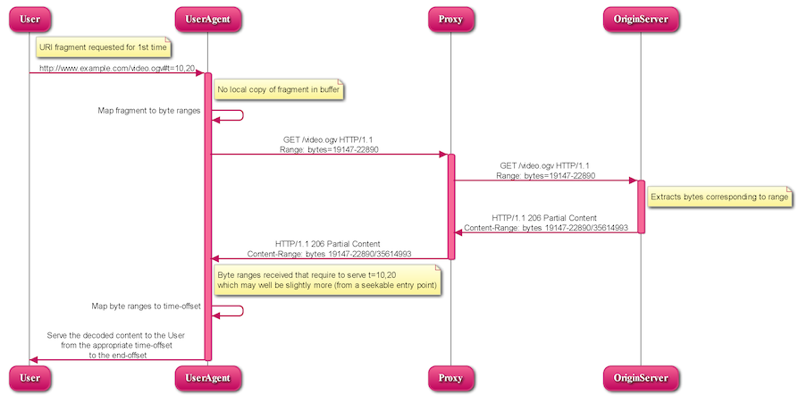

Media Access
We need more use-cases
for EmScripten
by Alexander “Surma” Surma, October 2014
Included you will find…
Bundle of standards (mostly drafts) about different kinds of access to different kinds of media.
Buzzwords!
Who has heared of getUserMedia() or Web Audio API?
Buzzwords!
February 3, 2013
Buzzwords!
October 9, 2014
getUserMedia()
Web Audio API
Media Access?
- access media files (fragments)
- access media metadata
- access A/V devices
- generate and output audio
- process and record audio streams
- accessibility
Media Fragments URI
Quick overview
Access fragments of media
Media Fragments URI
Goal

Media Fragments URI
Dimensios
- Spatial
- Temporal
- Tracks
- ID
Media Fragments URI
Temporal Fragmentation
Syntax:
t=<start>,<end>
Example:
t=20,1:24:30
t=npt:50
t=,22:10
Media Fragments URI
Spatial Fragmentation
Syntax:
xywh=<start>,<end>
Example:
xywh=160,120,320,240
xywh=pixel:160,120,320,240
xywh=percent:25,25,50,50
URI
Intermezzo
foo://example.com:8042/over/there?name=ferret#nose
\_/ \______________/\_________/ \_________/ \__/
| | | | |
scheme authority path query fragment
Media Fragments URI
Usage
Individual resource (server-side implementation)
http://yt.com/FL3MqSKLNHY?t=20,30&xywh=160,120,320,240
http://yt.com/FL3MqSKLNHY#t=20,30&xywh=160,120,320,240
Media Fragments URI
Resolution
Media Fragments URI
Augmented HTTP Range Header
GET /video.ogv HTTP/1.1
Host: www.example.com
Accept: video/*
Range: t:npt=10-20
HTTP/1.1 206 Partial Content
Accept-Ranges: bytes, t, id
Content-Length: 3743
Content-Type: video/ogg
Content-Range: bytes 19147-22880/35614993
Content-Range-Mapping: { t:npt 9.85-21.16/0.0-653.79 }
= { bytes 19147-22880/35614993 }
Etag: "b7a60-21f7111-46f3219476580"
{binary data}
Media Fragments URI
Augmented HTTP Range Header
GET /video.ogv HTTP/1.1
Host: www.example.com
Accept: video/*
Range: t:npt=10-20;include-setup
HTTP/1.1 206 Partial Content
Accept-Ranges: bytes, t
Content-Length: 804020
Content-Type: multipart/byteranges;boundary=End
Content-Range-Mapping:
{ t:npt 10.0-20.0/0-38.3;include-setup } =
{ bytes 0-1650,1264525-2066894/4055466 0}
--End
Content-Type: video/webm
Content-Range: bytes 0-1650/4055466
{binary data}
--End
Content-Type: video/webm
Content-Range: bytes 1264525-2066894/4055466
{binary data}
Media Fragments URI
Support
getUserMedia()
navigator.getUserMedia = (
navigator.getUserMedia ||
navigator.webkitGetUserMedia ||
navigator.mozGetUserMedia ||
navigator.msGetUserMedia
);
getUserMedia()
navigator.getUserMedia({
video: true,
audio: false
},
function(localMediaStream) {
var video = document.querySelector('video');
video.src = window.URL.createObjectURL(localMediaStream);
video.play();
setTimeout(function() {
localMediaStream.stop();
video.src = "";
}, 5000);
},
function(err) {
console.log("The following error occured: " + err);
});
Web Audio API
var context = new webkitAudioContext();
var oscillator = context.createOscillator();
oscillator.connect(context.destination);
oscillator.noteOn(0);
Sources
- http://www.w3.org/TR/2012/REC-media-frags-20120925/
- http://www.w3.org/TR/2011/WD-media-frags-recipes-20111201/
- http://ninsuna.elis.ugent.be/MediaFragmentsServer